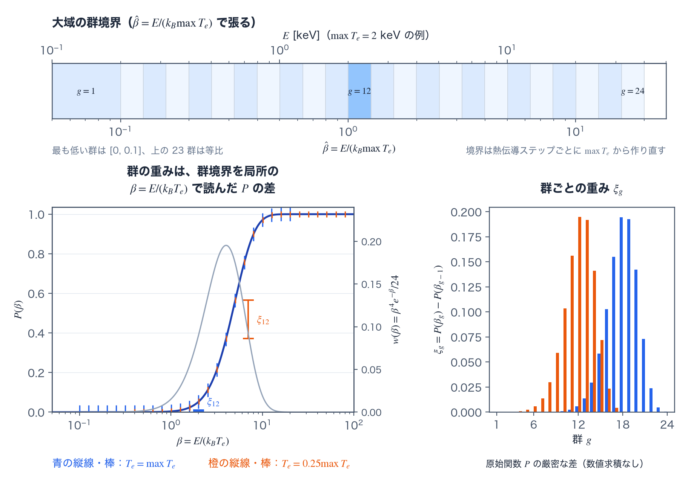

電子・イオン熱伝導 reference
TENRYU の局所電子熱輸送は、Z 依存の γ0 補正（Z-dependent γ0 correction。局所モデルの節で定義する）を常に含む Spitzer–Härm（SH）伝導率、調和型の流束制限（harmonic flux limiter）、スーパータイムステッピング（super-time-stepping、STS）で構成される。1D と 2D RZ では、明示的に有効化する SNB（Schurtz–Nicolaï–Busquet）多群モデル（multigroup model）が非局所補正（nonlocal correction）を加え、Cao 2015 の implicit-SNB（iSNB）ピカール反復（Picard iteration）で時間方向に連成する。イオン熱伝導は独立したオプションである。この計算に固有の用語は用語の節で説明する。
物理機構
レーザー標的では、レーザーエネルギーが吸収される場所（臨界密度面（critical-density surface）より外側の希薄なコロナ）と、そのエネルギーがアブレーション圧（ablation pressure）として仕事をする場所（高密度側のアブレーション面（ablation front））が空間的に離れている。この二つの領域をつなぐ主要なエネルギー輸送が電子熱伝導である。その強さはアブレーション圧と質量アブレーション率（mass ablation rate）を決め、同時に、アブレーション面より前方の低温物質へどれだけ熱が先回りするか — 予熱（preheat）の量 — も決める。
出発点となるモデルは、熱流束を「その場の温度勾配」に比例させる拡散型の式 \(\mathbf q_{SH}=-\kappa_{SH}\nabla T_e\)、すなわちフーリエ則（Fourier's law）である。伝導率 \(\kappa_{SH}\) には、電子–イオンのクーロン衝突（Coulomb collision）に基づく Spitzer–Härm（SH）理論の値を使う。温度依存は次の連鎖で決まる。クーロン散乱は速い電子ほど曲げにくいので、衝突周波数（collision frequency）は \(\nu_{ei}\propto v^{-3}\) で急減する。これを熱的電子（thermal electron。\(v\sim v_{th,e}\propto T_e^{1/2}\)）で評価すると \(T_e^{-3/2}\) になり、平均自由行程（mean free path、mfp）\(\lambda_{ei}=v/\nu_{ei}\) は \(\lambda_{ei}\propto T_e^{2}/(n_e Z\ln\Lambda)\) と温度の 2 乗で伸びる。伝導率はおおよそ「電子密度 × 熱速度 × 平均自由行程」で見積もれるため、密度依存が打ち消し合い、\(\kappa_{SH}\propto T_e^{5/2}/(Z\ln\Lambda)\) が残る。温度が 2 倍になるだけで伝導率は約 5.7 倍という強い非線形である。したがってコロナが高温になるほど熱伝導は物理的に強くなり、同時に、後述するとおり陽的に解くには時間刻みが極端に小さくなる、数値的に「硬い（stiff）」拡散問題になる。ただしフーリエ則は「電子がその場の勾配だけを感じて流束が決まる」という局所近似なので、成り立つのは電子の平均自由行程が温度勾配のスケール長（scale length）\(L_T=T_e/|\nabla T_e|\) より十分短い場合に限られる。
一方、熱流束の大半を運ぶのは平均的な熱的電子ではない。流束への寄与を電子エネルギー別に分解すると（後述の SNB が使うスペクトル重み \(\beta^4e^{-\beta}/24\) がこの分布である）、寄与のピークはおよそ \(3–4\,v_{th,e}\) で動く超熱的な電子（suprathermal electron）にある。平均自由行程は \(\lambda=v/\nu\) と \(\nu\propto v^{-3}\) の帰結として \(v^4\) に比例するので、これらの電子の平均自由行程は熱的電子の 34–44、約 80–260 倍に達する。したがって局所近似の条件 \(\lambda\ll L_T\) は、熱的電子で評価すれば満たされていても、実際に熱を運ぶ電子でははるかに早く破れる。この破れは、勾配が最も急なアブレーション面付近から生じる。
局所近似が破れた強勾配の極限でも、プラズマが運べる熱流束には明確な物理上限がある。全熱エネルギーが熱速度で一方向へ流れると仮定した自由飛行の流束（free-streaming flux）\(n_e k_BT_ev_{th,e}\) である。実際に持続できる流束はその一部でしかないことが運動論（kinetic theory）に基づく計算と実験の双方で知られており、TENRYU はその割合を係数 \(f_{lim}\) に持たせて、上限 \(q_{max}=f_{lim}n_ek_BT_ev_{th,e}\) を課す。制限は係数 \(\theta=1/(1+|q_{raw}|/q_{max})\) を掛ける形で行い、適用後の流束 \(q=\theta q_{raw}\) は、大きさについて \(1/|q|=1/|q_{raw}|+1/q_{max}\) を満たす — 抵抗の並列合成と同じ「調和合成（harmonic composition）」であり、これが「調和型」の名の由来である。勾配が緩いところでは \(q\approx q_{raw}\) のまま、強勾配では折れ点を作らずに滑らかに \(q_{max}\) へ飽和する。局所 SH モデルの既定値 \(f_{lim}=0.06\) は、直接照射（direct drive）実験との比較で古くから使われてきた較正範囲の値である。SNB と組み合わせる値 0.5 が大きく緩いのは役割が違うためで、流束の抑制は SNB 自身が計算し、流束制限は、非局所補正を加えた合成流束が異常に大きくなったときにだけ働く（詳細は SNB の節）。
流束制限だけでは非局所（nonlocal）輸送は表せない。平均自由行程の \(v^4\) 依存は二つの帰結を同時にもたらす。第一に、勾配が最も急な点では、電子が勾配スケールを衝突なしに走り抜けるため、局所勾配から期待される流束は立たず、実流束は Spitzer–Härm 値を下回る。これを流束抑制（flux inhibition）と呼ぶ。第二に、同じ電子は停止するまでの数平均自由行程のあいだ前方へ熱を運び続けるため、アブレーション面より先の物質が加熱される（予熱）。流束制限は局所流束を減らすことしかできないので、第一の効果は近似できるが、熱を勾配の前方へ運ぶ第二の効果は原理的に表せない。両方を捉えるには、電子をエネルギー別に追い、どこまで届きどこで熱を落とすかを解く非局所モデルが必要である。
Schurtz–Nicolaï–Busquet（SNB）モデルは、この目的の標準的な簡約運動論モデル（reduced kinetic model）である。完全な運動論方程式を解く代わりに、SH 流束を電子エネルギー群（energy group）に分割し、各群の輸送場（transport field）\(H_g\)（次元は熱流束）に対して、その群の平均自由行程 \(\lambda_g\) を距離スケールとする拡散方程式を解く。\(H_g\) は、局所 SH 流束の群配分を源泉として周囲へ広がる。これは、その群の電子が局所の勾配から離れた位置まで熱を運ぶことを表す。そこから再構成した補正 \(\delta q=-\sum_g(\lambda_g^{tr}/3)\nabla H_g\) が、急勾配点の流束を減らすと同時に前方に予熱を作る。TENRYU の SNB は独立したソルバではなく、同じ制限付き SH 経路への加算補正である。補正後の合成流束は、局所経路と共通のただひとつの流束制限を通る。群、輸送場などの SNB の量は用語の節で定義する。また、既定の平均自由行程較正（Sherlock 2017 の \(r=2\)）は電場による流束抑制を実効的に含むため、明示的な電場項は二重計上を避ける目的で既定オフである。較正係数 \(r\) は Brodrick らの整理における群平均自由行程の縮尺パラメータで、採用した平均自由行程（Sherlock 2017）は \(r=2\) の選択と等価である。
数値面の主課題は、陽的な拡散更新に付く安定条件（stability condition）\(\Delta t\lesssim\Delta x^2/D\) である。熱拡散率（thermal diffusivity）\(D\propto T_e^{5/2}/\rho\) は高温・希薄なコロナで急増するため、安定に許される部分ステップ（substep）幅は流体の大域ステップ（global step）よりはるかに小さくなる。典型的な GXII（激光 XII 号、GEKKO XII）のコロナ（500 µm ベンチマークカプセルのコロナセル：\(T_e\approx2\) keV、\(\rho\approx10^{-3}\) g/cm³、\(\Delta l\approx50\,\mu\)m）では、大域のドライバステップ 1 回に対して通常の部分ステップが 130–340 回必要になる。STS は、この部分ステップの列を、長さの異なる \(s\) 個の段（stage）で置き換える。段を組み合わせた安定区間が \(O(s^2)\) で広がるため、必要な段数は部分ステップ数の平方根程度（\(s\approx\lceil\sqrt{2N_{sub}}\rceil\)）で済み、この例では 17–27 段になる。係数は入口の温度で固定し（2D RZ の Kirchhoff 割線（secant）だけは段の温度で評価する。スーパータイムステッピングの節参照）、ステップの最後に 1 回だけ再クロージャ（re-closure。\((\rho,e)\) から状態方程式（equation of state、EOS）で温度・圧力・比熱を求め直す操作）を行う。更新はすべて保存型であり、材料別の保存モードも同じ STS を使う。任意選択のイオン熱伝導は、1D では STS を使わず、同じ面の伝導率の作り方（face-κ policy）による後退オイラー（backward Euler）の三重対角（tridiagonal）系で別に解く。2D RZ では、電子と同じ節点局所の演算子にイオンの係数を入れ、電子と同じ STS で解く。
局所 Spitzer–Härm モデルと流束制限
電子伝導率は cgs + eV 単位系で次のように評価する。平均電離度（mean ionization）\(\bar Z\) には物性モデルの値を使う。クーロン衝突の頻度を支配するのは電荷の 2 乗平均なので、電荷モーメント比（charge-moment ratio）\(r_2=\langle Z^2\rangle/\bar Z^2\) が得られる材料では、\(\bar Z\) を衝突実効電荷（collisional effective charge）\(\bar Z r_2\) に置き換える。電荷モーメントの表から \(r_2\) を得る経路は 1D_SPH だけなので、2D RZ の電子伝導は \(\bar Z\) のままである（EOS・不透明度・電離参照）。
$$ \kappa_{SH}=\kappa_0\,\xi(\bar Z)\, \frac{T_e^{5/2}}{\bar Z\ln\Lambda},\qquad \xi(Z)=\frac{(Z+0.24)/(Z+4.2)}{(1+0.24)/(1+4.2)}, $$ $$ \kappa_0=3.06\times10^9 \;\mathrm{erg/(cm\,s\,eV^{7/2})},\qquad \mathbf q_{SH}=-\kappa_{SH}\nabla T_e. $$ここで \(\kappa_0\) は cgs + eV 単位系での Spitzer 前置係数、\(\xi(\bar Z)\) は下の箇条書きで詳述する Z 依存補正、\(\ln\Lambda\) はクーロン対数（Coulomb logarithm）、\(\mathbf q_{SH}\) が得られる制限前の熱流束である。
1D では流束制限を面ごとに適用する。面の電子密度と温度（いずれも左右セルの算術平均）と、その温度から求めた熱速度から \(q_{max}\) を作り、機構節で述べた調和合成の形で制限する（\(k_B\) は cgs + eV 単位系の常として eV→erg の換算定数 eV_to_erg である）。
2D RZ では、流束制限をセルごとに適用する。そのセルの電子密度と温度から \(q_{max}\) を作り、セルの温度勾配の大きさ \(|\nabla T_e|\)（セルの節点の勾配の大きさの平均）から \(q_{raw}=\kappa_{SH}|\nabla T_e|\) を作って、セルの実効伝導率 \(\kappa_{eff}=\theta\kappa_{SH}\) を求める。
- \(\xi(Z)\)：γ0(Z) は Braginskii 輸送理論の無次元電子熱伝導係数（dimensionless electron heat-conduction coefficient。Spitzer 型伝導率の前置数。Z=1 で 3.16）であり、ξ(Z) はその Z 依存を Z=1 で 1 になるよう規格化した Epperlein–Short の近似式である（ξ(1)=1、ξ(∞)=4.19）。Z=1 の成分（3.16）は κ0 に折り込み済みである。ξ(Z) は 1D と 2D、材料別の保存モード、SNB の基底となる SH 流束を含むすべての経路で適用され、無効にする設定はない。
- \(q_{max}\) と \(\theta\)：\(q_{max}=f_{lim}n_ek_BT_ev_{th,e}\) が自由飛行の流束に対する割合を定め、θ が調和的な補間を与える。局所経路は \(q_{raw}=q_{SH}\)、SNB は \(q_{raw}=q_{SH}+\delta q\) を使う。SH と SH+δq が二重に制限されることはなく、通るのはひとつの共通した流束制限だけである（図A）。
- 面の伝導率の作り方：1D で面の κ を左右セルの値からどう作るかは
face_kappa_policyが決める（既定は Kirchhoff 割線kirchhoff_same_material）。定義と式は用語の節、使い方は面の伝導率の節にある。制限に使う SH の推定値と、実際に適用する流束は、常に同じ面の κ を使う。 - ボイド：
cell_is_voidは κeff=0 を強制して断熱境界を作り、下限密度しかもたない外側のセルが陽的な安定限界（explicit stability limit） Δtexp を潰してしまうのを防ぐ。SNB ではボイドを恒等行とし、隣接する群の拡散係数を 0 にする。 - SNB の群：電子エネルギーを温度で規格化した β̂=E/(kB max Te) について、最も低い群を [0, 0.1] とし、それより上の群境界は 0.1 から
snb_E_max_over_Teまでの等比数列で張る（既定の 24 群では、等比の区間が 23）。各群の重み（group weight）ξg=P(βg)−P(βg−1) は、原始関数（antiderivative）の厳密な差として作る。平均自由行程には、既定のgeometric_r2と Schurtz の原型の 2 通りがある。群と重みの定義は用語の節、群境界と重みの図は図Bにある。 - iSNB のピカール反復：Cao 2015 型の連成は (θ, δq) を固定したうえで、\(T_e^n\) から STS の大ステップ（superstep）を繰り返し、補正を計算し直す。最低 2 回は反復し、流束の最大ノルム（maximum norm）の相対許容値で収束を判定する。収束したときの増幅率（amplification factor）は任意の Δt で (0,1) に入り、無条件安定（unconditionally stable）である。反復の定義は用語の節にある。

nonlocal_model="none" では δq=0 となり、局所モデルの制限付き SH 流束に戻る。右：流束制限の応答 |q|/qmax=x/(1+x)（x=|qraw|/qmax、青の実線）。点線は拡散的な極限 q≈qraw、破線は自由飛行の上限 qmaxで、実線はどの x でも両者の下にある。この計算で使う用語
熱伝導の計算には、TENRYU の実装に固有の意味で使う語がある。STS の時間刻みを表す語、面の伝導率の作り方、2D RZ の節点局所の演算子、材料別の保存モード、SNB の量である。これらをまとめて定義する。
STS の時間刻み
大域ステップ（global step）は、ドライバが外側の 1 ステップで進める時間刻み \(\Delta t\) である。決め方は時間刻み制御の頁にある。熱伝導は、チェビシェフの段で 1 回の STS が覆える最大の区間 \(s_{max}(s_{max}+1)\Delta t_{exp}/2\)（既定では \(\Delta t_{exp}\) の 820 倍）を、大域ステップの上限として提案する（熱伝導の節）。
陽的な安定限界（explicit stability limit）\(\Delta t_{exp}\)は、熱拡散を前進オイラー法（forward Euler method）で陽的に進めるとき、更新が安定である刻みの目安である。κ が \(T_e^{5/2}\) に比例するので、コロナでは \(\Delta t_{exp}\) が \(\Delta t\) の数百分の 1 になる。1D ではセル幅と実効熱拡散率から、2D RZ では更新に使う演算子の Gershgorin の上界（Gershgorin bound）から求める（手順 3）。安全係数（safety factor）\(C_{cond}\) はキー Numerics.dt.cfl_cond（既定 0.25、範囲 (0, 1]）である。\(\Delta t/\Delta t_{exp}\) が、STS の段数を決める。
部分ステップ（substep）は、STS を使わずに \(\Delta t\) を \(\Delta t_{exp}\) ごとの陽的な更新に分けるとしたときの、1 回の更新である。必要な数は \(N_{sub}=\lceil\Delta t/\Delta t_{exp}\rceil\) で、GXII のコロナでは 130–340 になる。TENRYU は部分ステップを実行しない。\(N_{sub}\) は、STS の効果を見積もる比較の量である。
大ステップ（superstep）は、STS が 1 回の段の列で進める区間 \(\Delta t_{sup}\) である。\(\Delta t\) が \(\eta\,s_{max}(s_{max}+1)\Delta t_{exp}/2\) 以下のときは、大域ステップがそのまま 1 つの大ステップになる。これを超えるときは、\(\Delta t\) を等しい \(n_{sup}\) 個の大ステップに分ける。\(s_{max}\) は 1 つの大ステップの段数の上限（sts_max_stages、既定 40、範囲 1–200）、\(\eta\) は分割を判定する係数（sts_subcycle_eta、既定 0.9、範囲 (0, 1]）である。既定では、1 つの大ステップが \(\Delta t_{exp}\) の約 738 倍（\(0.9\times820\)）までを覆う。
段（stage）は、大ステップの中の 1 回の前進オイラー更新である。1 つの大ステップは \(s\) 個の段から成り、\(j\) 番目の段の時間刻み \(\tau_j\) は段ごとに違う（式は手順 5）。\(\tau_j\) の和は \(\Delta t_{sup}\) に等しい。長い段と短い段を組み合わせると、段の列の全体が安定である区間が \(s^2\) に比例して広がり、段数 \(s\) は \(\sqrt{2\Delta t_{sup}/\Delta t_{exp}}\) 程度で足りる。段の長さの分布は、段数と減衰（damping）\(\nu\)（sts_damping、既定 0.01、範囲 (0, 1)）で決まる。
面の伝導率の作り方
面の伝導率の作り方（face-κ policy）は、1D で、隣り合う 2 つのセルの κ から、その境にある面の熱伝導率 \(\kappa_f\) を決める規則である。キーは Numerics.conduction.face_kappa_policy で、値は "kirchhoff_same_material"（既定）と "harmonic" である。
\(\kappa\propto T^{5/2}\) は、急峻な熱波面（thermal wave front）を横切る温度区間で何桁も変わる。そのため \(\kappa_f\) の作り方が、波面の進み方を左右する。"harmonic" は、左右のセルの κ の調和平均（harmonic mean）\(2\kappa_L\kappa_R/(\kappa_L+\kappa_R)\) を \(\kappa_f\) とする。調和平均は小さいほうの κ に引かれるので、波面の前方では \(\kappa_f\) が過小になり、波面が格子に固着しがちである。片側の κ が 0 なら \(\kappa_f\) も 0 で、熱は通らない。
"kirchhoff_same_material" は、左右の温度 \(T_L\)、\(T_R\) の区間で \(T^{5/2}\) を厳密に積分した割線（secant）を使う。Kirchhoff 変換（Kirchhoff transformation）に基づく面平均である。
ここで \(\tilde\kappa\) は、セルの κ から取り出した Spitzer 前置因子である。左右の \(\tilde\kappa\) の比が 0.1 と 10 のあいだにあるときだけ、この割線を使う。比がこの範囲の外にあるとき（物質界面や、テーブル由来の \(\tilde\kappa\) の大きな跳び）と、κ か \(T\) が正でないとき（ボイド）は、調和平均にする。\(\kappa_f\) は、流束制限に使う SH の推定値、実際の流束、既定のときの \(\Delta t_{exp}\)（手順 3）に、同じ値を使う。
2D RZ は節点局所の演算子（次項）を使い、面の \(\kappa_f\) を作らない。このキーは、演算子の各対に、2 つのセルの温度による割線（上の式の \(\tfrac27(T_R^{7/2}-T_L^{7/2})/(T_R-T_L)\)）を掛けるかどうかだけを選ぶ。"kirchhoff_same_material" では掛け、"harmonic" では掛けない。SNB の 2D RZ は割線を使わない。
節点局所の演算子
節点局所の演算子（node-local operator）は、2D RZ の熱伝導（電子、イオン、SNB の各群の方程式）で、セル中心の温度どうしを結ぶ対称な線形演算子である。2D RZ のメッシュは、子午面（meridional plane。r–z 面）の多角形のセルから成る。演算子は節点ごとの寄与の和で、節点の寄与は次のように作る。
コーナー（corner）は、節点 \(p\) に集まるセルのそれぞれについて、セルのうち \(p\) に接する部分である。セルの基準点（凸なセルでは重心）、\(p\) の前の辺の中点、\(p\)、\(p\) の後の辺の中点を結ぶ四角形で、流体の頁のコーナーと同じ分割である。
半辺（half-edge）は、\(p\) から出る各辺を中点で 2 つに分けたもののうち、\(p\) 側の部分である。半辺の温度 \(\Theta\) は未知数で、その半辺をはさむ 2 つのコーナー（境界では 1 つ）が共有する。各コーナーの温度勾配を、セルの温度と半辺の温度から Green–Gauss の式で表し、半辺を通る熱流を求める。内部の半辺では両側の熱流が等しく、境界の半辺では熱流が 0 であるという条件から、\(\Theta\) を節点を共有するセルの温度で表して消去する。残るのが、セル \(c\) から出る熱を、節点を共有するセルの温度の線形結合で表す行列 \(a\) である。
行列 \(a\) の行と列の和はどちらも 0 で（一様な温度に熱流はなく、熱流は連続である）、\(a\) は対称半正定値（symmetric positive semidefinite）である。セル \(c\) と、節点を共有するセル \(d\) の対の係数を \(G_{cd}=-(a_{cd}+a_{dc})/2\) とすると、セル \(c\) の熱容量 \((\rho c_vV)_c\) と温度の変化率の積は、隣のセルから流れ込む熱の和に等しい（\(V\) は回転体としての体積）。
$$ (\rho c_vV)_c\,\frac{dT_{e,c}}{dt}=\sum_dG_{cd}\,(T_{e,d}-T_{e,c}). $$割線を使うときは、右辺の各項に \(S_{cd}\) を掛ける（手順 6）。\(G_{cd}=G_{dc}\) なので、対の電力 \(G_{cd}(T_d-T_c)\) はセル \(c\) と \(d\) で符号だけが違い、熱エネルギーは保存される。
この演算子はメッシュの添字 \((i,j)\) を使わないので、四角形でないセルや、複数のブロックから成るメッシュにも同じ手順で使える。異なる伝導率のセルのあいだの熱流は、半辺での熱流の連続から決まり、面の調和平均は使わない。境界の半辺の熱流は 0 である。ただし、状態供給（state_supply）が働く z_bottom と z_top の側の半辺は、供給温度に保つ（単一ブロックのメッシュ）。演算子を選ぶキーはなく、2D RZ の熱伝導はすべてこの演算子で解く。対の係数 \(G_{cd}\) が、STS の更新と、陽的な安定限界 \(\Delta t_{exp}\) の上界を決める。
材料別の保存モード
材料別の保存モード（per-material conservation mode）は、1 つのセルに複数の材料が混在するとき、材料ごとの質量、体積率（volume fraction）、電子エネルギーを状態として持ち、材料ごとのエネルギーを保存する設定である。材料ごとの EOS で、材料ごとの温度と圧力を扱うために使う。キーは Numerics.materials.per_material_conservation_enabled（既定 False、2D RZ のみ）である。混合セル（mixed cell）の扱いは Numerics.materials.mixed_cell_closure で選ぶ。既定の "equal_compressibility" は、体積率を固定し、セルの圧力を材料の圧力の体積率による和とする扱いである。"pressure_relaxation" は、材料の圧力を、速度を制限して緩和させる扱いである。
熱伝導では、セルの電子温度を 1 つだけ STS で進め、そのエネルギーの変化を材料に配る。配り方は面の伝導率の節にある。SNB とは併用できない（入力検査が拒否する）。2D RZ でイオン熱伝導と併用するときは、mixed_cell_closure="pressure_relaxation" が要る。
SNB の量
群（group）は、電子のエネルギー \(E\) を区切った区間である。SNB は、エネルギー群ごとに非局所の輸送を解く。群境界は、そのステップの最大の電子温度 \(\max T_e\)（全セルの最大値）で規格化したエネルギー \(\hat\beta=E/(k_B\max T_e)\) で張る。最も低い群は \([0,\,0.1]\)、それより上の境界は 0.1 から \(\hat\beta_{max}\) までの等比数列である。群数は snb_n_groups（既定 24、2 以上）、上端 \(\hat\beta_{max}\) は snb_E_max_over_Te（既定 20、1 より大きい）である。\(\hat\beta\) の群境界に \(k_B\max T_e\) を掛けた物理エネルギー \(E_g\) を、そのステップのあいだ保持する。群を代表するエネルギーは \(\varepsilon_g=(E_{g-1}+E_g)/2\) である。
群の重み（group weight）\(\xi_g\)は、局所の SH 流束のうち、群 \(g\) の電子が運ぶ割合である（群境界と重みの図は図B）。SH 流束はエネルギーについて \(\beta^4e^{-\beta}/24\)（\(\beta=E/(k_BT_e)\)）の重みをもつので、\(\xi_g=P(\beta_g)-P(\beta_{g-1})\)、\(P(\beta)=1-e^{-\beta}(\beta^4+4\beta^3+12\beta^2+24\beta+24)/24\) と、解析的な累積分布関数（cumulative distribution function）の差で決まる（数値求積（numerical quadrature）は使わない）。\(\beta_g=E_g/(k_BT_e)\) は、群境界 \(E_g\) をセルの局所温度で規格化した値である。同じ \(E_g\) でも、局所温度が低いセルほど \(\beta_g\) が大きく、重みはエネルギーの小さい群に集まる。Z 依存補正の \(\xi(\bar Z)\) とは別の量である。
輸送場（transport field）\(H_g\)は、群 \(g\) の電子が非局所に運ぶ熱流束の場である（次元は熱流束）。群ごとに、局所の SH 流束の群配分 \(U_g=\xi_gq_{SH}\) を源泉とする拡散型の方程式（SNB の節）を解いて得る。\(H_g\) は、源泉が群の平均自由行程のスケールで周囲へ広がった分布である。
群の平均自由行程（group mean free path）\(\lambda_g^{abs}\)、\(\lambda_g^{tr}\)は、\(H_g\) の方程式に入る 2 つの長さである。\(\lambda_g^{abs}\)（添字 abs は吸収）は \(H_g/\lambda_g^{abs}\) の項で、源泉から離れるにつれて \(H_g\) が減る距離を決める。\(\lambda_g^{tr}\)（添字 tr は輸送）は拡散項の係数 \(\lambda_g^{tr}/3\) で、\(H_g\) が広がる速さを決める。どちらも、群の代表エネルギー \(\varepsilon_g\) の電子の平均自由行程 \(\lambda_g\)（式はSNB の節、キー snb_mfp）に等しい。ただし snb_efield="local" では、輸送側だけ、\(1/\lambda_g^{tr}\) に局所静電場の項を加えて短くする。
非局所補正（nonlocal correction）\(\delta q\)は、\(H_g\) の勾配から作る熱流束の補正 \(\delta q=-\sum_g(\lambda_g^{tr}/3)\nabla H_g\) である。局所の SH 流束に加えて、制限前の流束 \(q_{raw}=q_{SH}+\delta q\) とする。勾配が急な点では \(\delta q\) が SH 流束を減らし（流束抑制）、その前方では熱を運ぶ（予熱）。
iSNB（implicit-SNB）のピカール反復は、非局所補正を時間方向に連成する反復である（Cao らの方法）。補正 \(\delta q\) と制限係数 \(\theta\) を固定して、STS の大ステップ全体を \(T_e^n\) からやり直し、区間の端の温度で補正を計算し直す。補正の変化の最大値が、SH 流束の最大値と補正の最大値の和の snb_picard_rtol（既定 0.01）倍以下になるまで繰り返す。反復は最低 2 回、最大 snb_picard_max_iters（既定 8、2 以上）回である。収束したときの増幅率は、任意の \(\Delta t\) で (0, 1) に入る。
面の伝導率、材料別の保存モード、ボイド
1D の面の κ の作り方（定義と式は用語の節）は、既定の kirchhoff_same_material では、同じ材料の滑らかな Spitzer 面に限って Kirchhoff 割線を使う。単純な両端評価では急峻な熱波面の前面で面 κ が過小になり、波面が格子に固着しがちだが、割線はこの傾向を弱める。物質界面、ボイド、セルの伝導率から抽出した Spitzer 前置因子（\(\kappa_c/T_c^{5/2}\)）がテーブル由来で大きく跳ぶ箇所では、調和平均にする。harmonic も選べ、物質界面や伝導率の大きな跳びを保守的に扱う — 調和平均なので、片側の κ が 0 なら面の流束も 0 である。流束制限に使う SH の推定値と実際の流束は、必ず同じ面の κ を使う。2D RZ には面の κ がない。異なる伝導率のセルのあいだの熱流は、半辺での熱流の連続から決まり、調和平均は使わない。face_kappa_policy は、節点局所の演算子の各対に、その 2 つのセルの温度による割線を掛けるかどうかだけを選ぶ。
1D の平面・円筒・球の演算子は保存型の有限体積で、幾何の違いは面積 \(A_f\) とセル体積 \(V_i\) にしか現れない。材料別の保存モード（定義は用語の節、2D RZ のみ）では、セルごとに電子温度を 1 つだけ STS で進め、そのエネルギー変化を材料に配る。セルの伝導率は、材料 \(m\) ごとにその温度、密度、\(\bar Z\)、lnΛ から作った制限済みの熱伝導率 κeff,m を、体積率 αm で重み付けて足した和 Σmαmκeff,m とする。全段を終えたあと、セル \(c\) の電子エネルギーの変化 \(\Delta E_c=(\rho c_vV)_c(T_c^{n+1}-T_c^n)\) を、次の規則で材料に配る。\(\Delta E_c>0\) は、ステップ入口の材料の電子熱容量に比例して配り、各材料の温度が同じだけ上がるようにする。\(\Delta E_c<0\) は、材料の電子エネルギーの、温度の床（floor。Numerics.floors.Te。定義）における状態からの余剰に比例して配る。余剰の合計が \(-\Delta E_c\) に足りないときは、全材料が床の状態になり、不足分は床で加えたエネルギーとしてエネルギー台帳（energy ledger）に載せる。余剰が足りるときは、材料の電子エネルギーの和の変化がセルの変化に丸め誤差の範囲で一致する。mixed_cell_closure="pressure_relaxation" のときは、伝導は材料を区別しないセルの係数で進み、エネルギーの材料への配分はドライバが混合セルの圧力緩和の規則で行う。
cell_is_void のセルでは κeff=0 を強制する。これによりボイドの境界は熱を通さない断熱面になる。このマスクは性能の面でも必要である。下限密度しかもたないボイドのセルを通常の物質として評価すると、拡散率 κ/(ρcv) の分母が極端に小さいために巨大な拡散係数が生じ、それが安定限界 Δtexp を潰して STS を実質的に止めてしまうからである。SNB でも同じ扱いを徹底する。ボイドのセルは Hg=0 の恒等行とし、隣接面の群拡散係数を 0 にして、群拡散がボイドを飛び越えて予熱を運ぶ経路を残さない。
ion_conduction=True（2 温度モデルの 1D と 2D RZ）は、電子の熱伝導の後に、Braginskii のイオン熱伝導率 κi=3.906 niTiτi/mi（τi はイオンの衝突時間）でイオン温度を解く。1D では、後退オイラー法の三重対角系を 1 回解く。面の κ は電子と同じ face_kappa_policy で作り、面の流束は電子と同じ調和型の流束制限で抑える。2D RZ では、電子と同じ節点局所の演算子にイオンの係数を入れ、電子と同じ STS で解く。セルの伝導率には、セルの \(T_i\) の勾配の大きさで同じ調和型の流束制限を掛け、Kirchhoff 割線の設定（face_kappa_policy）も電子と同じである。流束の上限は、どちらもイオンの自由飛行の流束 niTi(Ti/mi)1/2 の ion_f_lim 倍（既定 1）である。動いた熱はイオンの内部エネルギーに記帳し、流体と同じ再クロージャで Ti を求め直すので、エネルギーは丸め誤差まで保存される。Z=1 では κi は電子の κSH のおよそ 1/(25√A) と小さいので、イオン熱伝導は既定では無効である。ただし、衝撃波の収束直後の中心のように Ti≫Te となる領域ではイオンが熱を運ぶ主体になる。2D RZ では、イオンの陽的な安定限界から決まる刻みの上限も、電子のそれと並んで大域ステップを制限する。
スーパータイムステッピング
Spitzer 伝導率は \(T_e^{5/2}\) に比例するため、大域ステップ \(\Delta t\) を陽的な安定限界 \(\Delta t_{exp}\) ごとの部分ステップで進めると、\(N_{sub}=\lceil\Delta t/\Delta t_{exp}\rceil\) 回の CUDA カーネルの起動が必要になる。典型的な GXII のコロナ — 機構節と同じ \(T_e\approx2\) keV、\(\rho\approx10^{-3}\) g/cm³、\(\Delta l\approx50\,\mu\)m の条件 — では \(N_{sub}\) は 130–340 に達する。STS は、長さの異なる段を組み合わせて安定区間を広げ、同じ区間を 17–27 段（\(s\approx\lceil\sqrt{2N_{sub}}\rceil\)）で進める。これらの語は用語の節で定義する。手順は次のとおりである。
1 回の熱伝導ステップの手順
すべての面の κ を作る。1D では、適用できる範囲で、同一材料の滑らかな Spitzer 面に
kirchhoff_same_materialを、物質界面・ボイド・テーブル値の大きな跳びには調和平均を使って、面の κ を評価する。2D RZ には面の κ がなく、セルの κeff から節点局所の演算子を組む。演算子に入れる各セルの伝導率は、割線を使うときは入口の温度による κeff/Te5/2、使わないときは κeff である。すべての面に流束制限を掛ける。1D では、同じ作り方の面の κ で面の SH 推定値を作り、\(q_{max}\) を評価して \(\theta=1/(1+|q_{raw}|/q_{max})\) を固定する。θ と面の κ の積が、そのステップで用いる制限済みの κeff になる。2D RZ では、セルごとに \(\kappa_{eff}=\theta\kappa_{SH}\)（前節）とし、これが制限済みの伝導率である。
-
陽的な安定限界を求める。1D では、\(D_{eff}=\kappa_{eff}/(\rho c_v)\) を作り、最も厳しいセルの値を取る（\(\Delta l_c\) はセル幅）。
$$ \Delta t_{exp}=C_{cond}\min_c\frac{(\Delta l_c)^2}{D_{eff,c}},\qquad C_{cond}=0.25\ \text{（既定）}. $$1D で既定の Kirchhoff 割線を使う面の κ（
face_kappa_policy）では、セルごとにもうひとつの値 \(2(\rho c_vV)_c/\sum_fG_f\) も作り（\(G_f=A_f\kappa_f/\Delta r_f\) はセルの 2 つの面のコンダクタンス、\(\kappa_f\) は流束制限の前の面の κ、\(\Delta r_f\) はセル中心の間隔）、小さいほうを最小値に入れる。2D RZ では、段が適用する演算子の Gershgorin の上界 \(\lambda_G\) から \(\Delta t_{exp}=4C_{cond}/\lambda_G\) とする。
$$ \lambda_G=\max_c\frac{w_c\left|\sum_dG_{cd}+b_c\right|+\sum_dw_d\left|G_{cd}\right|}{(\rho c_vV)_c}. $$ここで \(G_{cd}\) はセル \(c\) とそれに隣り合うセル \(d\) の対の係数、\(b_c\) は温度を保持した境界の半辺へのコンダクタンスの和（保持する境界がなければ 0）である。\(d\) の和には、ボイドのセルと \(\rho c_v\le0\) のセルを入れない。\(w\) は温度の重みで、Kirchhoff 割線を使うときは \(w_c=T_{e,c}^{5/2}\)（\(G_{cd}\) は \(\kappa_{eff}/T_e^{5/2}\) から組む）、使わないときは \(w_c=1\) である。段の演算子は行列 \(M^{-1}K\) で、\(M=\mathrm{diag}(\rho c_vV)\)、\(K_{cd}=-G_{cd}\)、\(K_{cc}=\sum_dG_{cd}+b_c\) である。Gershgorin の円板定理（Gershgorin circle theorem）により、\(\lambda_G\) は \(M^{-1}K\) のすべての固有値の上界であり、\(\Delta t_{exp}\) は、すべての固有値 \(\lambda\) について \(\lambda\Delta t_{exp}\le4C_{cond}\) が成り立つことを構成上保証する。割線を使うときの上界は、計算に使った温度での値なので、各段で確かめる（手順 6）。
-
段数を決める。チェビシェフの安定区間は \(O(s^2)\) で広がる。1 つの大ステップが進める区間を \(\Delta t_{sup}\) とすると、段数は次のとおりである。
$$ s=\min\!\left(s_{max},\ \max\!\left(1,\left\lceil\sqrt{2\Delta t_{sup}/\Delta t_{exp}}\right\rceil\right)\right). $$ここで \(s_{max}\) は段数の上限（
sts_max_stages、既定 40）である。\(\Delta t\) が \(\eta\,s_{max}(s_{max}+1)\Delta t_{exp}/2\) を超えるときは、\(\Delta t\) を \(n_{sup}=\lceil\Delta t/(\eta\,s_{max}(s_{max}+1)\Delta t_{exp}/2)\rceil\) 個の等しい大ステップに分け、\(\Delta t_{sup}=\Delta t/n_{sup}\) とする。\(\eta\) はsts_subcycle_eta（既定 0.9）である。超えないときは \(n_{sup}=1\)、\(\Delta t_{sup}=\Delta t\) である。2D RZ でsts_schemeが RKL2 を選ぶときの段数と分割は、キーの表のsts_schemeの行に記す。 -
段の時間刻みを作る。既定の減衰 ν=0.01（チェビシェフの減衰パラメータ
$$ \tau_j=\frac{\Delta t_{exp}} {\nu^2+(1-\nu^2)\cos^2\!\left(\frac{\pi(2j-1)}{4s+2}\right)}, \quad j=1,\ldots,s, $$sts_damping— 機構節の衝突周波数 \(\nu_{ei}\) や CBET ページのイオン音波の減衰率 \(\nu_a\) とは別物）として次を作る。その後、段の時間刻みの総和が大ステップの区間に一致する（\(\sum_j\tau_j=\Delta t_{sup}\)）よう、すべての τj を一様に再スケールする。既定の構成では、再スケール前の総和が \(\Delta t_{sup}\) を上回るため、この再スケールは τj を縮める方向に働く。
-
係数を固定したまま全段を適用する。\(D_{eff}\)、κeff（1D では面の κ）、ρcv は入口の \(T_e^n\) における値に固定し、段のあいだで更新するのは温度だけである。ただし 2D RZ の Kirchhoff 割線は、段の温度で評価する。
$$ T_{e,j}=T_{e,j-1}+\frac{\tau_j}{\rho c_v}\mathcal M_{1D}(T_{e,j-1}),\qquad T_{e,c,j}=T_{e,c,j-1}+\frac{\tau_j}{(\rho c_vV)_c}\sum_dG_{cd}S_{cd}\,(T_{e,d,j-1}-T_{e,c,j-1}). $$ここで \(\mathcal M_{1D}\) は固定した係数での保存的な 1D 面流束発散演算子、\(G_{cd}=-(a_{cd}+a_{dc})/2\) は節点局所の演算子の行列 \(a\) から作る対の係数（\(G_{cd}=G_{dc}\)）、\(d\) は節点を共有する隣のセル（ボイドのセルと \(\rho c_v\le0\) のセルは除く）である。\(S_{cd}\) は 2 つのセルの温度による \(T^{5/2}\) の割線 \(\tfrac27(T_d^{7/2}-T_c^{7/2})/(T_d-T_c)\) で、
face_kappa_policy="harmonic"では \(S_{cd}=1\) とする。1D は面の熱流を、隣り合う 2 つのセルに符号だけを反転して入れる。2D RZ の対の電力 \(G_{cd}S_{cd}(T_d-T_c)\) も、\(c\) と \(d\) で符号だけが違う。したがって、どちらの更新も保存的である（温度の床へのクランプ（clamp）が介入しないかぎり）。材料別の保存モードでも、固定したセルの係数に同じ更新を適用する。2D RZ で割線を使うとき、演算子のスペクトルは段のあいだで変わる。そこで各段は、入力温度で行の上界 \(\lambda_G\) を計算し直し、計画に使った値の \(1+\)
sts_bound_margin倍（既定 1.1 倍）を超えていないかを調べる。超えた段があれば、そのステップを \(T_e^n\) から、計画し直した段でやり直す。最初の試行は全段を最後まで進めて最大の上界を測り、その \(1+\)sts_bound_margin倍で計画し直す。以後の試行は超えた段で止め、計画を 2 倍にする。やり直しはsts_bound_retries_max（既定 4）回までで、それでも超えるときは、ドライバに全ステップの再試行（full-step retry。時間刻みを半分にして外側のステップ全体をやり直す）を要求する。再試行が無効のとき（Numerics.hydro.driver_full_step_retry_enabledの既定）、または試行回数の上限（driver_full_step_retry_max_attempts、既定 3）か時間刻みの下限に達したときは、実行が停止する。SNB の経路は割線を使わず、この検査もない。 最後に 1 回だけ再クロージャを行う。全段を終えたあと、温度の変化に対応する電子エネルギーの変化 \(c_{v,e}(T_e^{n+1}-T_e^n)\)（\(c_{v,e}\) はステップ入口の値）を ee に記帳し、表の EOS をもつ材料では \((\rho,e_e)\) から Te、Pe、Cv,e を求め直す。表のない理想気体の材料では、更新後の温度から ee、Pe を求める。これは
Numerics.hydro.eos_closure_modeが既定の"energy_authoritative"のときで、"legacy"では表の材料も、更新後の温度から ee、Pe を求める。
SNB 多群非局所モデル
nonlocal_model="snb" は、1D の平面・円筒・球と 2D RZ の電子熱伝導に、明示的に有効化する Schurtz–Nicolaï–Busquet 補正を加える。三重対角系を使う以下の離散化は 1D のものである。2D RZ では、各群の方程式を節点局所の演算子で組み（拡散項の伝導率に \(\lambda_g^{tr}/3\) を、対角に \(V/\lambda_g^{abs}\) を使う）、全群をまとめて、Jacobi 前処理（Jacobi preconditioner）付きの共役勾配法（conjugate gradient method）で解く（2D RZ では snb_efield="local" は使えない）。熱伝導ステップごとに、規格化電子エネルギー β̂=E/(kB max Te) の群境界を作り直す。最も低い群は [0, 0.1] で、それより上の境界は 0.1 から snb_E_max_over_Te までを等比に区切る（既定は 24 群で、等比の区間が 23）。群境界は大域の \(\hat\beta\) で張ったうえで物理エネルギー \(E_g\) へ写して保持し、重み \(\xi_g\) の評価では境界を各セルの局所温度による \(\beta_g=E_g/(k_BT_e)\) に読み替えて \(P\) を評価する（1D の面では面平均の \(T_e\)、2D RZ ではセルの対の平均の \(T_e\) を使う）。各群では、輸送場 \(H_g\)（次元は熱流束）に対する次の拡散型方程式を解く。右辺の源泉は局所 SH 流束の群配分 \(U_g\) の発散である。源泉として注入された \(U_g\) が平均自由行程のスケールで周囲へ拡散し広がったものが \(H_g\) で、その勾配から後述の非局所補正を再構成する。
ここで \(P(\beta)\) は、Spitzer–Härm 熱流束を規格化電子エネルギーについて累積した分布関数である — 流束は \(\beta^4e^{-\beta}/24\) のスペクトル重みをもち、\(P\) はその積分である。したがって ξg は解析的な原始関数の差であり、数値求積は使わない。補正の総和は \(\delta q=-\sum_g(\lambda_g^{tr}/3)\nabla H_g\) である。1D では、セル中心の Hg を体積積分した有限体積の式は、厳密に対角優位（diagonally dominant）な三重対角系となり、全群をストライド付きの一括処理（strided batch）で解く。面の拡散係数は左右の λtr の調和平均を 3 で割った値で、閉じた境界では反射条件（reflecting boundary condition）を課す。

群を代表するエネルギー \(\varepsilon_g=(E_{g-1}+E_g)/2\) は erg で評価する。群の平均自由行程 \(\lambda_g\) の式には次の 2 通りがある。下の電場オプションが輸送側を短くしないかぎり、\(\lambda_g^{abs}\) と \(\lambda_g^{tr}\) はどちらもこの \(\lambda_g\) に等しい。
$$ \lambda_g= \begin{cases} \dfrac{2\sqrt2\,\varepsilon_g^2} {4\pi n_e e^4\ln\Lambda\,\sqrt{\bar Z\varphi}}, & \texttt{geometric_r2}\quad(\text{Sherlock 2017; default}),\\[6pt] \dfrac{2\,\varepsilon_g^2} {4\pi n_e e^4\ln\Lambda\,\sqrt{\bar Z+1}}, & \texttt{original}\quad(\text{Schurtz 2000}), \end{cases} \qquad \varphi=\frac{\bar Z+4.2}{\bar Z+0.24}. $$通常は λabs=λtr である。snb_efield="local" は輸送側の平均自由行程だけを \(1/\lambda_g^{tr}\mathrel{+}=|e\mathcal E|/\varepsilon_g\) によって短くするが（\(\mathcal E\) は筆記体で表した局所静電場の大きさ — エネルギーの \(E\) との衝突を避けた記法 — で、プラズマ状態から評価する）、既定は none である。r=2 の較正がすでに電場による抑制を含むため、併用すると二重計上になり得る。
SNB 補正の手順
群を作り直す。熱伝導ステップごとに、最大の \(T_e\) から、大域的な β̂ の群境界（最も低い群は [0, 0.1]、それより上は 0.1 から
snb_E_max_over_Teまでの等比数列）を作り直し、原始関数の厳密な差から ξg を作る。平均自由行程を評価する。局所の電子密度、クーロン対数、電離状態、群の中心エネルギーから各 λg を計算する。式は既定の
geometric_r2、または Schurtz のoriginalを使う。連立系を組み立てる。1D では、各群のセル中心の有限体積方程式を体積積分し、厳密に対角優位な三重対角系にする。反射境界で領域を閉じ、ボイドは恒等行、隣接する拡散係数は 0 とする。2D RZ では、各群の演算子を節点局所の演算子で組み、対角に \(V/\lambda_g^{abs}\) を加える。境界は反射とし、ボイドのセル、\(\rho c_v\le0\) のセル、平均自由行程のないセルの行は恒等行（\(H_g=0\)）にする。
全群を解く。1D では、全群をストライド付き一括の三重対角求解としてまとめて実行し、\(H_g\) を得る。2D RZ では、全群をまとめた Jacobi 前処理付き共役勾配法で解く。相対残差の許容値は \(10^{-10}\)、反復の上限は 1000 で、どちらもキーのない固定値である。上限までに収束しないときは警告を出して、最後の反復結果を採用する。
-
補正を再構成する。群の順序を固定して次を加算する。
$$ \delta q=-\sum_g\frac{\lambda_g^{tr}}{3}\nabla H_g. $$ 制限前の流束を合成する。1D では、局所 SH 経路と同じ作り方の面の κ を使い、\(q_{raw}=q_{SH}+\delta q\) を作る。2D RZ では、基底の SH 流束を作る節点局所の演算子に流束制限も割線も使わず（\(\kappa_{SH}\) を使う）、対の電力に非局所補正の対の電力を加える。
共通の流束制限を適用する。\(\theta=1/(1+|q_{raw}|/q_{max})\) を 1 回だけ評価し、\(q=\theta q_{raw}\) を適用する。SNB 専用の 2 つ目の制限はない。2D RZ では、\(\theta_c\) をセルごとに作り（\(q_{raw}\) は、セルの節点の勾配の平均から求めた \(-\kappa_{SH}\nabla T_e-\sum_g(\lambda_g^{tr}/3)\nabla H_g\) である）、セル \(c\) と \(d\) の対の電力には \(\min(\theta_c,\theta_d)\) を掛ける。
iSNB のピカール反復を閉じる。(θ, δq) を固定し、\(T_e^n\) から STS の大ステップ全体をやり直して、区間の端で補正を計算し直す。最低 2 回は反復し、
snb_picard_max_itersに達するまで、流束の最大ノルムの相対値をsnb_picard_rtolと比較する。収束しなかった場合はその旨を報告し、最後の反復結果を採用する。収束したときの増幅率は、任意の Δt で (0,1) に入る。
SNB と組み合わせる f_lim は 0.5 と緩い。流束をどれだけ抑えるかは SNB 自身が計算するので、この値で非局所効果の強さを調整するわけではない。緩い流束制限は、非局所補正を加えた合成流束が異常に大きくなったときにだけ働く。GUI（Studio）は SNB を選ぶとこの値に切り替えるが、ソルバの既定値は SNB でも 0.06 なので、手で書くデッキでは 0.5 を明示する。
namelist による制御
以下は Numerics.conduction の主要キーである。全項目と検証規則は namelist リファレンスを参照のこと。表の既定値は、デッキで指定しないときの値である。Studio が書き出す値がこれと違うのは f_lim だけで、SNB を選ぶと 0.5 になる。
| キー | 既定値 | 用途 |
|---|---|---|
conduction.enabled | True | 電子熱伝導の演算子全体を有効化。 |
f_lim | 0.06 | 局所モデルと SNB が共通に使う、調和型の流束制限の係数（自由飛行の流束に対する割合）。SNB では、非局所効果を調整する値ではなく、異常な合成流束を止める上限として 0.5 を明示する（GUI は自動で切り替える）。 |
ion_conduction | False | Braginskii のイオン熱伝導（2 温度の 1D と 2D RZ。Studio が受け付けるのは 1D だけ）を電子の後に解く。 |
ion_f_lim | 1.0 | イオン熱流束の上限（イオンの自由飛行の流束の倍数）。 |
solver | "sts" | 許容値は "sts"（既定の陽的チェビシェフ・スーパータイムステッピング）、"implicit"、"hypre"、"dmp_implicit"。"implicit" は 1D で後退オイラー法の三重対角系を解き、伝導は大域ステップを制限しない。2D の単一ブロックのメッシュでは警告を出して STS で解き、マルチブロックのメッシュでは入力検査が拒否する。"hypre" は 2D では入力検査が拒否する。1D では hypre を有効にしたビルドでだけ受理されるが、陰解法（implicit method）は実行されず、警告を出して STS で解く。"dmp_implicit" は 2D RZ の電子伝導を、離散最大値原理（discrete maximum principle）を満たす非線形 2 点流束（two-point flux）の後退オイラー法で解く。電子の伝導は大域ステップを制限せず、SNB とは併用できない。反復は dmp_picard_rel_tol（既定 10−10）、dmp_picard_max_iterations（50）、dmp_anderson_depth（5）で制御し、上限までに収束しないステップは、状態を変えずに小さい刻みでやり直す。SNB は "sts" を要求する。Studio が書くのは "sts" と 1D の "implicit" である。 |
sts_scheme | "chebyshev" | STS の段の取り方。"chebyshev" は上の手順のチェビシェフの段、"rkl2" は 2 次の Runge–Kutta–Legendre（RKL2）法の段、"auto" は大ステップの段数が sts_auto_rkl2_stages（既定 10）以上になるときだけ RKL2 を使う。Ccond=0.25 では、RKL2 の段数 s は奇数で、Δtsup ≤ (s2+s−2)/2 · Δtexp を満たす最小の s ≥ 3 であり、上限 scap は sts_max_stages 以下の最大の奇数である。Δt が η(scap2+scap−2)/2 · Δtexp を超えるときは、チェビシェフの段と同じ形で、Δt を等しい大ステップに分ける。"rkl2" と "auto" は 2D RZ の solver="sts" でだけ受理される。 |
sts_max_stages | 40 | 1 つの大ステップの段数の上限 smax（範囲 1–200）。 |
sts_subcycle_eta | 0.9 | 大域ステップを大ステップに分ける判定の係数 η（範囲 (0, 1]）。 |
sts_damping | 0.01 | チェビシェフの段の減衰 ν（範囲 (0, 1)）。 |
sts_bound_margin | 0.1 | 2D RZ の Kirchhoff 割線で、各段の Gershgorin の上界を、計画に使った値の 1+この値 倍と比べる。超えた段があれば、ステップをやり直す。 |
sts_bound_retries_max | 4 | その検査でステップをやり直す回数の上限。 |
face_kappa_policy | "kirchhoff_same_material" | 面の κ の作り方。既定は、同一材料での Kirchhoff 割線。調和平均の "harmonic" も選べる。2D RZ では、節点局所の演算子の各対に割線を掛けるかどうかを選ぶ。 |
nonlocal_model | "none" | "none"、または 1D と 2D RZ の "snb"。Studio が書くのは 1D だけである。 |
snb_n_groups | 24 | SNB のエネルギー群数（最も低い群 [0, 0.1] を含む。2 以上）。 |
snb_E_max_over_Te | 20 | 群境界の上端（β̂ の最大値。1 より大きい）。0.1 から上端までを等比に区切る。 |
snb_mfp | "geometric_r2" | Sherlock の r=2 が既定、または "original"。 |
snb_efield | "none" | 任意選択の局所電場による平均自由行程の補正は "local"。 |
snb_picard_max_iters | 8 | iSNB のピカール反復の上限。最低 2 回は反復する。 |
snb_picard_rtol | 0.01 | 流束の最大ノルムによる相対収束判定。 |
検証
- SNB を切った計算との一致：
nonlocal_model="none"のとき、GXII の FLD の 6 つの指標が、SNB を足す前の局所モデルの計算とビット単位で同一（相対差 0）に保たれる。 - SNB の局所極限（
snb_local_limit_1d）：平均自由行程 λ→0 で SNB が局所 SH に戻ることを、正弦的な温度摂動に対する流束低減比（分散応答、dispersion response）\(R(k)=\sum_g\xi_g/(1+\lambda_g^{abs}\lambda_g^{tr}k^2/3)\) で確かめ、離散演算子の値 \(R_{disc}\) が許容値 10−3 のもとで ∣R−Rdisc∣≤5.5×10−8 に収まることを見る。さらに、小さな k での漸近挙動（asymptotics）\((1-R)\propto k^2\) を log–log 勾配 1.986（≈2）で確かめる。幅を 10 倍変えた 2 段の tanh 温度ランプでは、SNB 流束の SH 流束からの相対逸脱がいずれも導出した面局所の曲率上界に収まり、段間の逸脱比 100.7 が局所極限の二次法則の期待（約 100）と一致することを検査する。 - SNB と解析解の比較（
snb_dispersion_1d）：離散化した Epperlein–Short の解析解と 7.2×10−7 以内で一致する（判定値は 3×10−3、分散関係（dispersion relation）の検査は \(k\lambda_{ei}<0.5\) の帯が対象である）。 - SNB の保存（
snb_conservation_1d_planar、snb_conservation_1d_spherical、snb_conservation_1d_cylindrical）：平面・円筒・球の保存収支を、判定値 10−14 に対して 7.4×10−17 まで閉じる。 - SNB の最大値原理（maximum principle。
snb_max_principle_1d）：希薄な受け手の帯をもつ球対称のホットスポットで、各ステップの電子温度の最大値が入口の値を超えないこと、入口の最大温度へのクランプで除いたエネルギーを含めて全区間のエネルギーが 10−13 で閉じること、希薄な帯のない対照の計算ではそのクランプが一度も働かないことを確かめる。 - STS の比較：解析解を持つ 1D の零流束固有モード（eigenmode）について、球・平面・円筒の STS の計算を、陰解法および材料別の対応する計算と突き合わせ、空間の精度次数と、閉じた領域での電子エネルギー保存を検査する。さらに
test_conduction_pattle_1dが、Pattle の非線形拡散の相似解（similarity solution）[4] との比較で \(T^{5/2}\) 熱波面の伝播を判定する。 - GXII の基準解：熱伝導を有効にした統合回帰試験が、吸収エネルギー、最大圧縮時刻、シェル最小半径、ピーク密度、面密度、中心温度を判定する。
- Kirchhoff 割線の検査：同一材料の急峻な面を対象に、次を検査する。Kirchhoff 割線と調和平均とで熱流と時間刻みがどう変わるかの比、流束制限が効いた状態での \(|q|\le q_{max}\) の成立、固定した係数の演算子に対する Gershgorin 円板（Gershgorin disc）の対角優位性の検査による時間刻みの保護（体積 0 のセルは除外）、物質界面での調和平均への正しい切り替え。
参考文献
- L. Spitzer, Jr. and R. Härm, "Transport Phenomena in a Completely Ionized Gas," Phys. Rev. 89, 977–981 (1953). doi:10.1103/PhysRev.89.977
- S. I. Braginskii, "Transport Processes in a Plasma," Reviews of Plasma Physics 1, 205–311 (1965).
- E. M. Epperlein and R. W. Short, "A Practical Nonlocal Model for Electron Heat Transport in Laser Plasmas," Phys. Fluids B 3, 3092–3098 (1991). doi:10.1063/1.859789
- R. E. Pattle, "Diffusion from an Instantaneous Point Source with a Concentration-Dependent Coefficient," Q. J. Mech. Appl. Math. 12, 407–409 (1959). doi:10.1093/qjmam/12.4.407
- V. Alexiades, G. Amiez, and P.-A. Gremaud, "Super-Time-Stepping Acceleration of Explicit Schemes for Parabolic Problems," Commun. Numer. Methods Eng. 12, 31–42 (1996). doi:10.1002/(SICI)1099-0887(199601)12:1<31::AID-CNM950>3.0.CO;2-5
- G. P. Schurtz, Ph. D. Nicolaï, and M. Busquet, "A Nonlocal Electron Conduction Model for Multidimensional Radiation Hydrodynamics Codes," Phys. Plasmas 7, 4238–4249 (2000). doi:10.1063/1.1289512
- M. Sherlock, J. P. Brodrick, and C. P. Ridgers, "A Comparison of Non-Local Electron Transport Models for Laser-Plasmas Relevant to Inertial Confinement Fusion," Phys. Plasmas 24, 082706 (2017). doi:10.1063/1.4986095
- D. Cao, G. Moses, and J. Delettrez, "Improved Non-Local Electron Thermal Transport Model for Two-Dimensional Radiation Hydrodynamics Simulations," Phys. Plasmas 22, 082308 (2015). doi:10.1063/1.4928445
- A. Marocchino, M. Tzoufras, S. Atzeni, et al., "Comparison for Non-Local Hydrodynamic Thermal Conduction Models," Phys. Plasmas 20, 022702 (2013). doi:10.1063/1.4789878